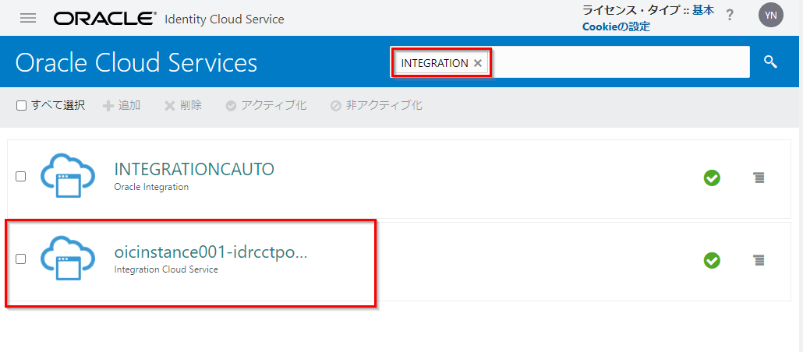
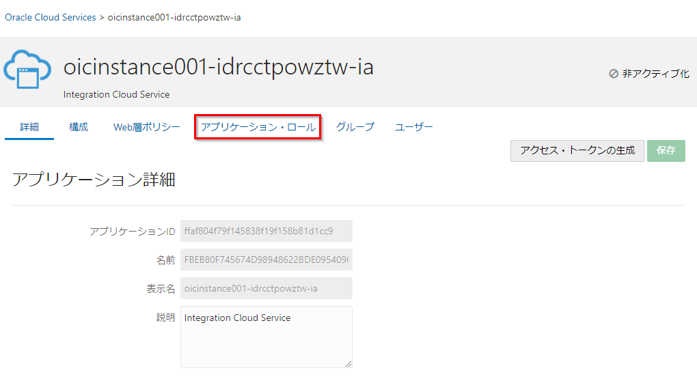
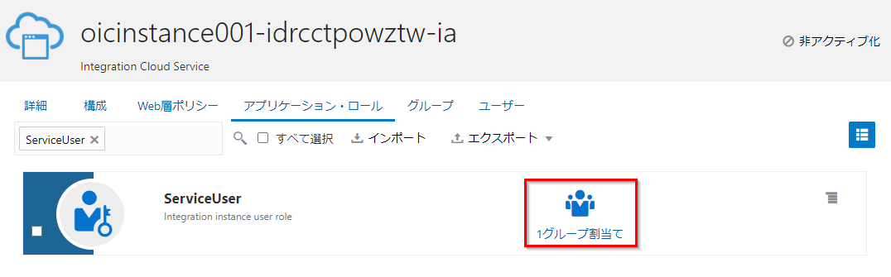

このハンズオンでは Oracle Integration(OIC) インスタンスを利用するユーザーの登録方法、およびロールの割り当て方法を ステップ・バイ・ステップで紹介します。

前提条件
- OIC インスタンスを作成するが実施済みであること
- IDCS の Identity Domain Administrator ロールが付与されたユーザーであること
OIC インスタンスにユーザーを追加する
OIC インスタンスを利用するユーザーは、IDCS ユーザーとして登録します。
ここでは、以下の手順で IDCS ユーザーを OIC インスタンスの事前定義済アプリケーションロールの ServiceUser に割り当てる手順を説明します。
- IDCS の管理コンソールを開く
- IDCS グループを作成する
- IDCS グループを OIC インスタンスのアプリケーションロールに割り当てる
- IDCS ユーザーを作成し、IDCS グループに割り当てる
OIC の事前定義済アプリケーションロールについて
OIC の事前定義済アプリケーションロール（以降、事前定義済ロールと省略）は、OIC のさまざまな機能へのアクセスを制御します。事前定義済ロールに対して、IDCS で作成したユーザーおよびグループを割り当てることができます。Oracle Integration の事前定義済ロールと、そのロールを割り当てられたユーザーが実行できる一般的なタスクについては、下記ドキュメントをご確認ください。
-
Oracle Integration Roles and Privileges
https://docs.oracle.com/en/cloud/paas/integration-cloud/integration-cloud-auton/oracle-integration-cloud-roles-and-privileges.html#GUID-44661068-C31A-4AB5-BC24-B4B90F951A34 -
Oracle Integrationロールおよび権限(日本語翻訳版)
https://docs.oracle.com/cd/E83857_01/paas/integration-cloud/integration-cloud-auton/oracle-integration-cloud-roles-and-privileges.html#GUID-44661068-C31A-4AB5-BC24-B4B90F951A34
1. IDCS の管理コンソールを開く
IDCS の管理コンソールを開きます。今回は、OCI の管理コンソールからアクセスします。
OCI コンソールにサインインします。

OracleIdentityCloudService をクリックします。

Oracle Identity Cloud Service Console の URL をクリックします。

IDCS の管理コンソールが開きます。

2. IDCS グループを作成する
IDCS 管理コンソールを利用し、IDCS グループを作成します
ナビゲーションメニューを開き、グループをクリックします

追加をクリックします

名前と説明を入力し、終了をクリックします。ここではは以下を入力します 名前: OICServiceUsers 説明: IDCS group for OIC service users

グループが作成されることを確認します

3. IDCS グループを OIC インスタンスのアプリケーションロールに割り当てる
作成したIDCSグループ(OICServiceUsers)を、OIC の事前定義済ロール ServiceUser に割り当てます
左ナビゲーションメニューの Oracle Cloud Services をクリックします

アプリケーションの検索窓に INTEGRATION と入力し、検索を実行します グループを割り当てる OIC インスタンスをクリックします

アプリケーション・ロールタブをクリックします

ServiceUser のメニューをクリックし、割り当て済グループをクリックします

ロールに割り当てるグループを選択し、OKをクリックします。 ここでは、OICServiceUsers を選択します

ServiceUser ロールに、グループが割り当てられたことを確認します

4. IDCS ユーザーを作成し、IDCS グループに割り当てる
最後に、新規のIDCSユーザーを作成し、IDCS グループに割り当てます
左ナビゲーションメニューのユーザーをクリックします

追加をクリックします

名、姓、ユーザー名/電子メールを入力し、次をクリックします

ユーザーに割り当てるグループを選択し、終了をクリックします。 ここでは OICServiceUsers グループを選択します

新規のIDCSユーザーが作成されます

グループタブをクリックし、OICServiceUsers グループが割当てられていることを確認します

管理者は、新規作成ユーザーに対して OIC インスタンスのアクセス URL を連絡してください 以上でこのチュートリアルは終了です